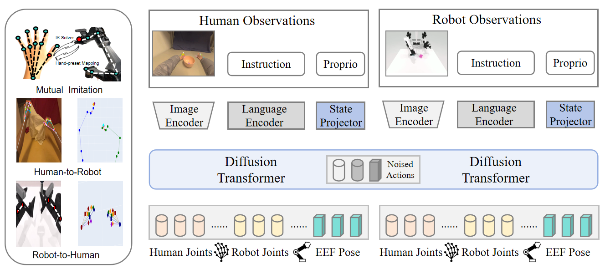
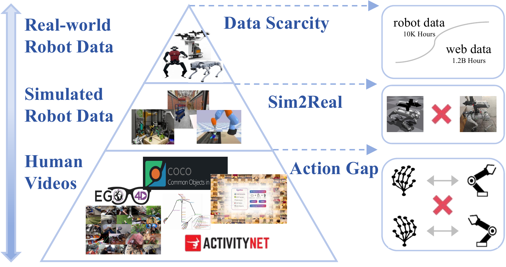
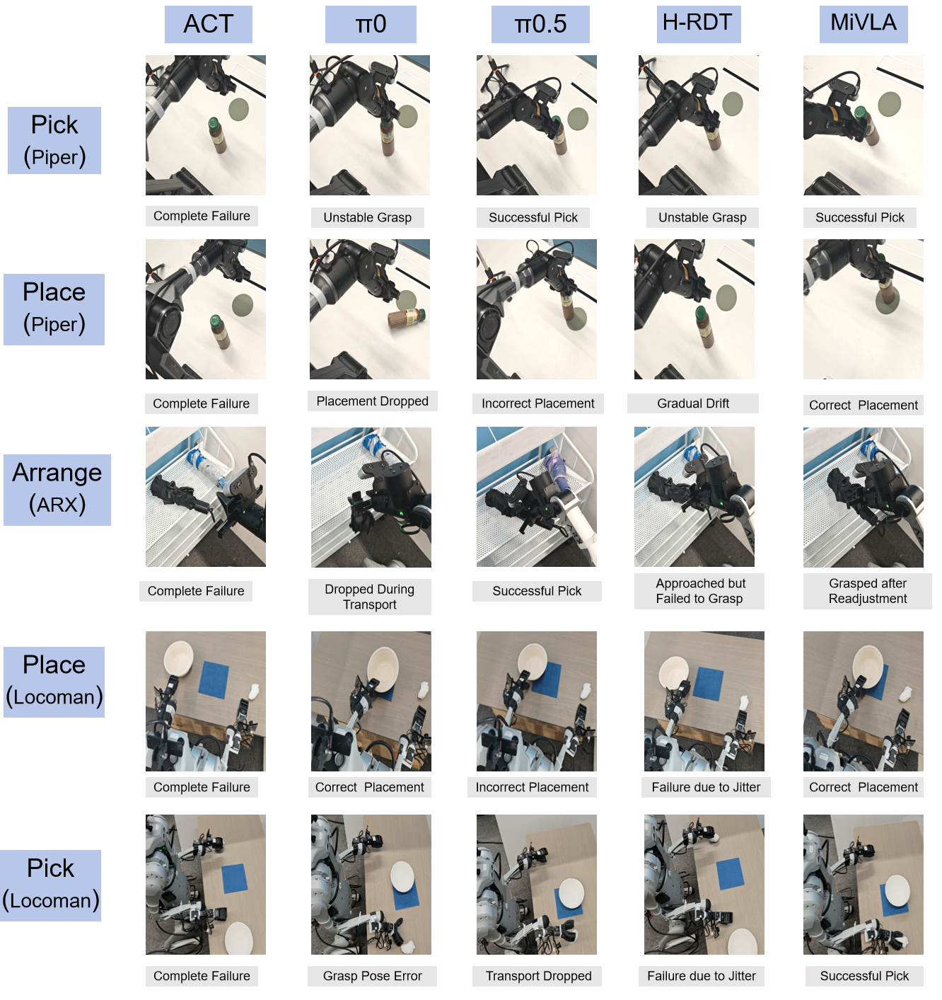

Human → robot
Align relative human hand motion to a robot end-effector target, then use inverse kinematics to recover robot joint actions.
CVPR 2026 PROJECT PAGE
Learning transferable robot behavior from human videos and simulated robot demonstrations.
Tongji University University of Electronic Science and Technology of China
From mutual imitation pre-training to simulated and physical robot manipulation.
PROJECT VIDEO · Open video in a new tab ↗
Vision-language-action models are typically pretrained on robot demonstrations, but real-world robot data is costly and difficult to collect at scale. Simulated robot trajectories offer varied manipulation skills, while human videos capture everyday actions in real scenes. Each source has a transfer gap: simulation differs from reality, and human hands differ from robot arms.
MiVLA bridges the action spaces with bidirectional human–robot conversion. For each demonstration, the model learns both the observed embodiment’s action and a converted action for the other embodiment. This mutual imitation objective brings human and simulated robot behavior into one policy, which is then adapted to downstream robot tasks.
MiVLA combines a geometric action bridge with a shared diffusion-based action policy.

Align relative human hand motion to a robot end-effector target, then use inverse kinematics to recover robot joint actions.
Use the robot end-effector as a hand reference and estimate finger positions from anatomical priors.
Train on the demonstrated action and the converted cross-embodiment action for both kinds of observation.
Image, language instruction, and proprioceptive state.
Human joints, robot joints, and end-effector pose.
A diffusion transformer trained for continuous action prediction.
Provide robot action trajectories and manipulation diversity, with a simulation-to-reality gap.
Provide real-scene behavior and task variety, with a hand-to-robot embodiment gap.
Both data types supervise original-action prediction and cross-embodiment imitation.
The paper’s “without real robot data” claim refers to pre-training. The real-robot experiments use 30 robot demonstrations per task for task-specific fine-tuning.

Success rates are shown with their task scope and source table.
Mean over the 20 selected tasks in Table 1. Across all 50 tasks in Table A1, MiVLA reports 62.0% Easy and 63.6% Hard.
Full-task success rate (SR) averaged over three tasks. MiVLA leads on LocoMan; π₀.₅ leads on the two single-arm tasks.
| Task / robot | ACT | π₀ | π₀.₅ | H-RDT | MiVLA |
|---|---|---|---|---|---|
| Bottle onto pad PiPER | 0% | 20% | 66% | 36% | 54% |
| Tidy umbrella rack ARX-5 | 0% | 60% | 75% | 45% | 60% |
| Gather objects LocoMan | 0% | 50% | 20% | 0% | 50% |
| Mean · 3 tasks | 0% | 43% | 54% | 27% | 55% |
Each real task uses 30 robot demonstrations for task-specific fine-tuning. Values are full-task success rates from Table 2.

The paper tests the training recipe through ablations, few-shot adaptation, and changes in the test environment.
RoboTwin-2.0 success rate rises as the cross-embodiment objectives are added.
With 30 bottle-task demonstrations, the bidirectional setting reaches 56% success, compared with 0% from scratch. The benefit varies with task and demonstration count.
In the reported full-data setting, MiVLA reaches 75% on seen cases, 50% on unseen locations, 30% on unseen objects, and 38% on unseen scenes.
Novel object shapes, unusual or cluttered initial poses, and highly distracting backgrounds can still cause failures. In some challenging out-of-distribution cases, the paper observes stronger semantic generalization from π₀.₅.
Paper, implementation, released pre-trained model, and project demonstration.
MiVLA appeared at CVPR 2026. The BibTeX below cites the public preprint.
@article{yin2025mivla,
title={MiVLA: Towards Generalizable Vision-Language-Action Model with Human-Robot Mutual Imitation Pre-training},
author={Yin, Zhenhan and Wang, Xuanhan and Jiang, Jiahao and Deng, Kaiyuan and Chen, Pengqi and Li, Shuangle and Liu, Chong and Xu, Xing and Song, Jingkuan and Gao, Lianli and Shen, Heng Tao},
journal={arXiv preprint arXiv:2512.15411},
year={2025}
}